Pan placement revision3 — all18 native views
18/18 individually inspected. Pan/slab ratios and basin containment4.6; painted grain4.6, faint mineral contact4.3, invitation support4.0 and actor contact2.7 still need work. Original/literal/painted lanes at1280 and1600 widths share inherited input/progress. No complete-action or owner acceptance.
Earlier18 views · Individual scores/hashes · Machine evidence
geologist_1280_pan_invitation_original
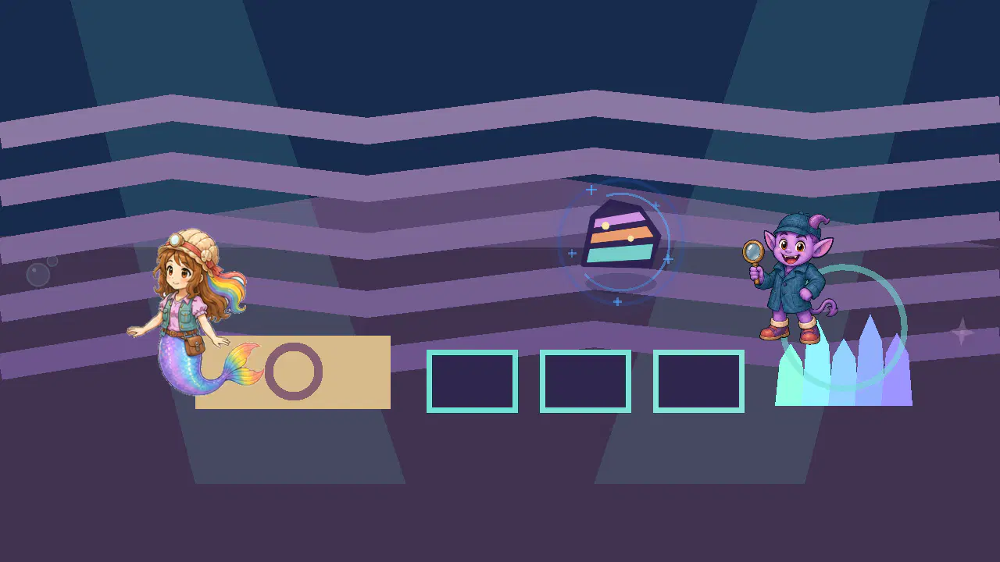
object finish 3.9/5; object semantics 3.0/5; scene style 2.8/5; layout 3.0/5
The cue remains a layered rock rather than a panning dish, semantic3.0. Literal painted replacement changes the material but retains the wrong object. Flat stripe room, rectangular trays and procedural reward crystals remain weak2.8.
Unmodified individual native Godot4.7.2 Mobile desktop view, directly inspected. Phase-selected fixture followed by actual viewport approach and three inherited reversals. Not a completed job, ordinary training/story route, device, child or owner approval.geologist_1280_pan_invitation_literal_raster
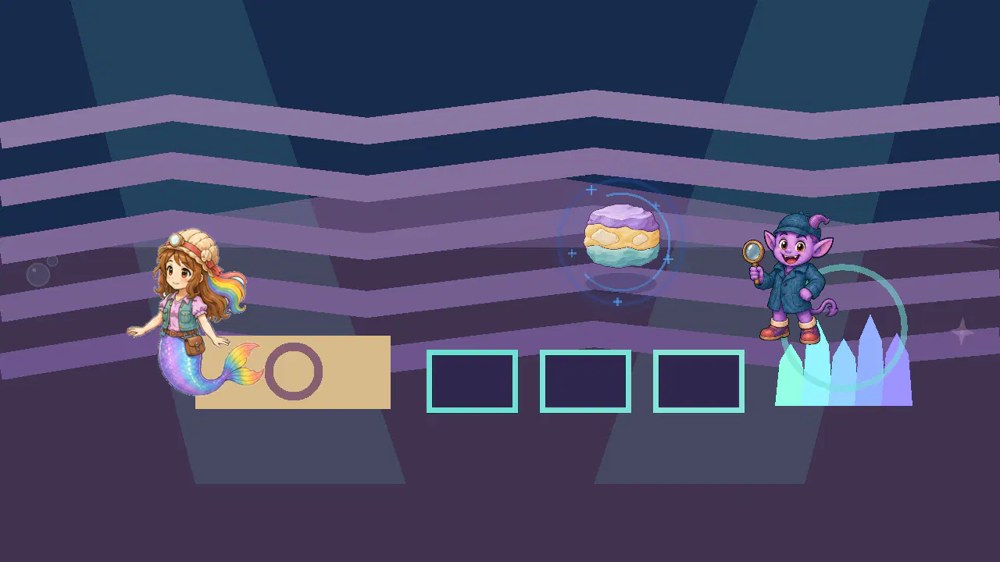
object finish 3.9/5; object semantics 3.0/5; scene style 2.8/5; layout 3.0/5
The cue remains a layered rock rather than a panning dish, semantic3.0. Literal painted replacement changes the material but retains the wrong object. Flat stripe room, rectangular trays and procedural reward crystals remain weak2.8.
Unmodified individual native Godot4.7.2 Mobile desktop view, directly inspected. Phase-selected fixture followed by actual viewport approach and three inherited reversals. Not a completed job, ordinary training/story route, device, child or owner approval.geologist_1280_pan_invitation_painted_staging
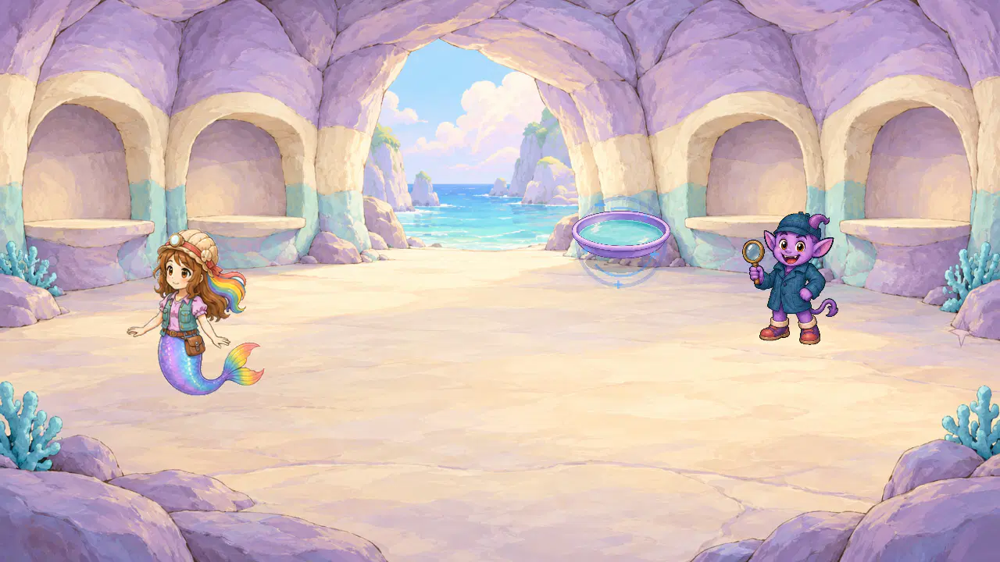
object finish 4.6/5; object semantics 4.6/5; object geometry 4.6/5; scene style 4.4/5; layout 4.4/5; invitation support 4.0/5
The painted pan preserves its2.06 oval ratio and honestly invites panning; warm plum matte rim and water remain clear at native invitation size4.6. The attempted support is completely hidden by its lower draw layer, so it receives no visible-object score; the invitation still hovers4.0. This is a disposable fixture defect, not a new production finding. Room finish is coherent4.4 but its source remains under native resolution.
Unmodified individual native Godot4.7.2 Mobile desktop view, directly inspected. Phase-selected fixture followed by actual viewport approach and three inherited reversals. Not a completed job, ordinary training/story route, device, child or owner approval.geologist_1280_pan_opened_task_original

object finish 3.5/5; object semantics 4.5/5; scene style 2.8/5; layout 3.0/5; grain finish 3.8/5; actor work contact 2.7/5
Procedural work staging remains flat and separate from Roshan. The literal pan source is stretched to the inherited520x320 rectangle4.4; grains still sit against the front rim4.1. Whole scene remains2.8 and actor hands do not contact the pan2.7.
Unmodified individual native Godot4.7.2 Mobile desktop view, directly inspected. Phase-selected fixture followed by actual viewport approach and three inherited reversals. Not a completed job, ordinary training/story route, device, child or owner approval.geologist_1280_pan_opened_task_literal_raster
object finish 4.6/5; object semantics 4.5/5; object geometry 4.4/5; scene style 2.8/5; layout 3.0/5; grain finish 3.8/5; grain containment 4.1/5; actor work contact 2.7/5
Procedural work staging remains flat and separate from Roshan. The literal pan source is stretched to the inherited520x320 rectangle4.4; grains still sit against the front rim4.1. Whole scene remains2.8 and actor hands do not contact the pan2.7.
Unmodified individual native Godot4.7.2 Mobile desktop view, directly inspected. Phase-selected fixture followed by actual viewport approach and three inherited reversals. Not a completed job, ordinary training/story route, device, child or owner approval.geologist_1280_pan_opened_task_painted_staging
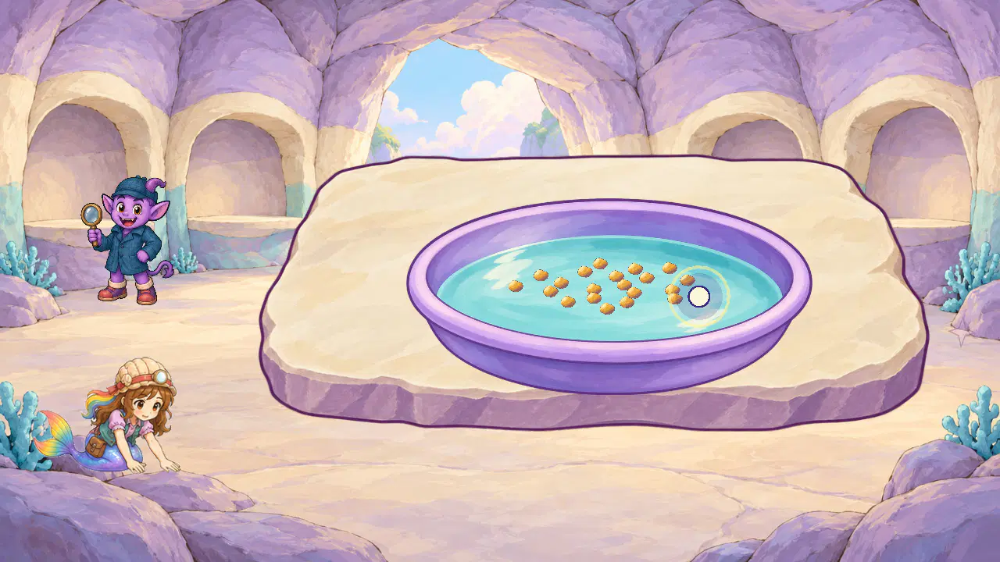
object finish 4.6/5; object semantics 4.6/5; object geometry 4.6/5; scene style 4.4/5; layout 4.4/5; slab geometry 4.6/5; grain finish 4.6/5; grain containment 4.6/5; actor work contact 2.7/5
The pan and slab retain their authored ratios4.6 and form a much calmer horizontal work plane. The reduced interior scatter keeps every visible grain inside the water4.6, and the freshly painted honey-ochre grains resolve flat dot finish at native size4.6. Roshan remains remote from the work2.7, so these isolated object improvements do not pass the whole action.
Unmodified individual native Godot4.7.2 Mobile desktop view, directly inspected. Phase-selected fixture followed by actual viewport approach and three inherited reversals. Not a completed job, ordinary training/story route, device, child or owner approval.geologist_1280_pan_partial_panning_reversals_original
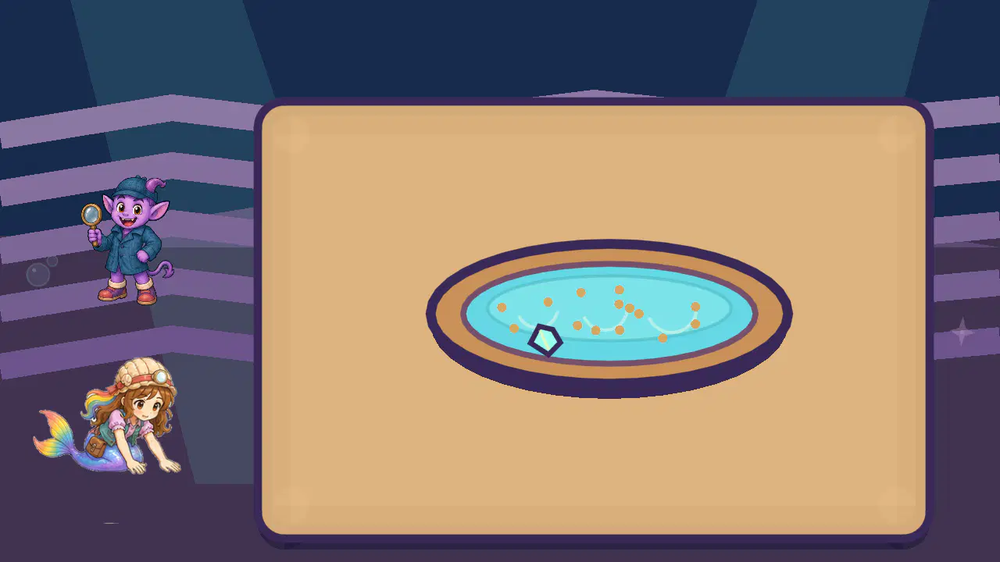
object finish 3.5/5; object semantics 4.5/5; scene style 2.8/5; layout 3.0/5; grain finish 3.8/5; mineral finish 3.8/5; actor work contact 2.7/5
Procedural work staging remains flat and separate from Roshan. The literal pan source is stretched to the inherited520x320 rectangle4.4; grains still sit against the front rim4.1. Whole scene remains2.8 and actor hands do not contact the pan2.7.
Unmodified individual native Godot4.7.2 Mobile desktop view, directly inspected. Phase-selected fixture followed by actual viewport approach and three inherited reversals. Not a completed job, ordinary training/story route, device, child or owner approval.geologist_1280_pan_partial_panning_reversals_literal_raster
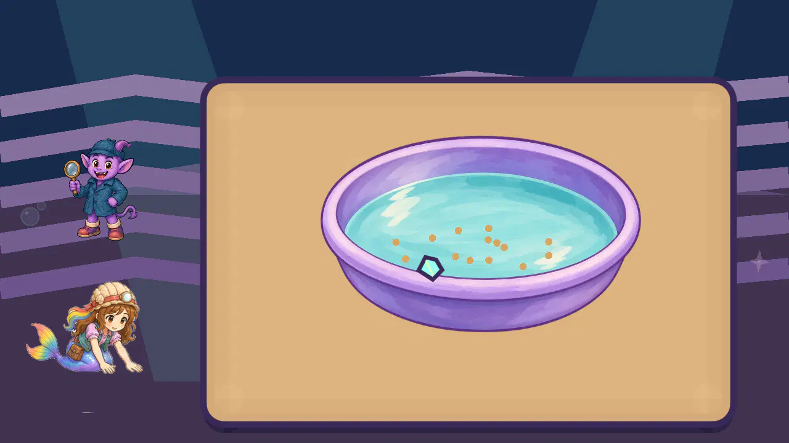
object finish 4.6/5; object semantics 4.5/5; object geometry 4.4/5; scene style 2.8/5; layout 3.0/5; grain finish 3.8/5; grain containment 4.1/5; mineral finish 3.8/5; mineral containment 3.4/5; actor work contact 2.7/5
Procedural work staging remains flat and separate from Roshan. The literal pan source is stretched to the inherited520x320 rectangle4.4; grains still sit against the front rim4.1. Whole scene remains2.8 and actor hands do not contact the pan2.7.
Unmodified individual native Godot4.7.2 Mobile desktop view, directly inspected. Phase-selected fixture followed by actual viewport approach and three inherited reversals. Not a completed job, ordinary training/story route, device, child or owner approval.geologist_1280_pan_partial_panning_reversals_painted_staging
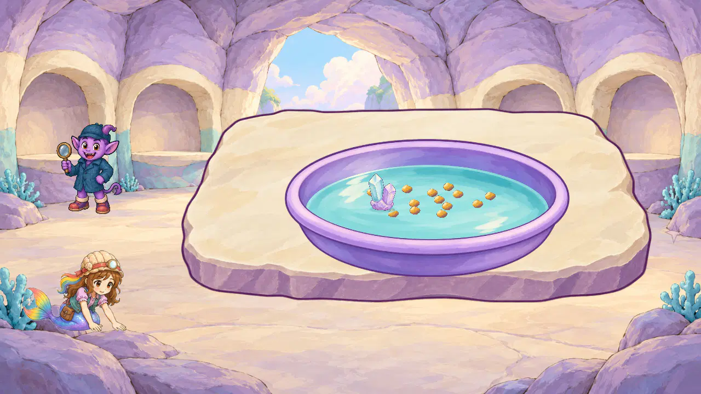
object finish 4.6/5; object semantics 4.6/5; object geometry 4.6/5; scene style 4.4/5; layout 4.4/5; slab geometry 4.6/5; grain finish 4.6/5; grain containment 4.6/5; mineral finish 4.6/5; mineral containment 4.6/5; mineral water contact 4.3/5; actor work contact 2.7/5
The pan and slab retain their authored ratios4.6 and form a much calmer horizontal work plane. The reduced interior scatter keeps every visible grain inside the water4.6, and the freshly painted honey-ochre grains resolve flat dot finish at native size4.6. Reused painted cluster finish4.6 replaces the flat pentagon; its complete base is inside the basin4.6 but the very faint water-contact ellipse still does not convincingly seat it4.3. This still requires correction. Roshan remains remote from the work2.7, so these isolated object improvements do not pass the whole action.
Unmodified individual native Godot4.7.2 Mobile desktop view, directly inspected. Phase-selected fixture followed by actual viewport approach and three inherited reversals. Not a completed job, ordinary training/story route, device, child or owner approval.geologist_1600_pan_invitation_original
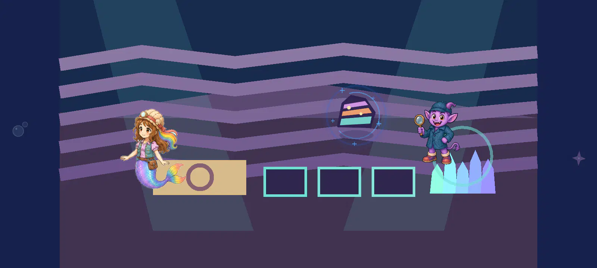
object finish 3.9/5; object semantics 3.0/5; scene style 2.8/5; layout 3.0/5
The cue remains a layered rock rather than a panning dish, semantic3.0. Literal painted replacement changes the material but retains the wrong object. Flat stripe room, rectangular trays and procedural reward crystals remain weak2.8.
Unmodified individual native Godot4.7.2 Mobile desktop view, directly inspected. Phase-selected fixture followed by actual viewport approach and three inherited reversals. Not a completed job, ordinary training/story route, device, child or owner approval.geologist_1600_pan_invitation_literal_raster
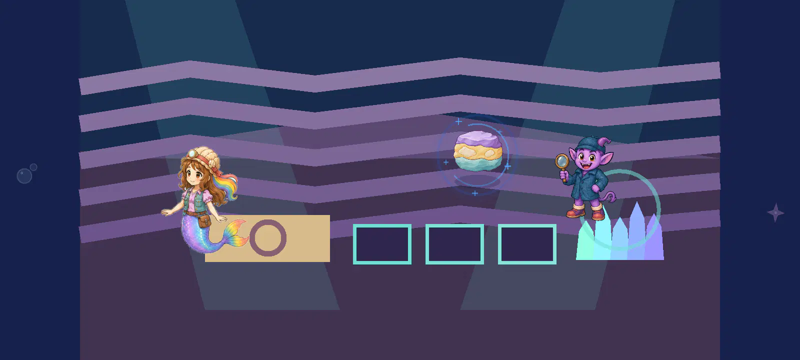
object finish 3.9/5; object semantics 3.0/5; scene style 2.8/5; layout 3.0/5
The cue remains a layered rock rather than a panning dish, semantic3.0. Literal painted replacement changes the material but retains the wrong object. Flat stripe room, rectangular trays and procedural reward crystals remain weak2.8.
Unmodified individual native Godot4.7.2 Mobile desktop view, directly inspected. Phase-selected fixture followed by actual viewport approach and three inherited reversals. Not a completed job, ordinary training/story route, device, child or owner approval.geologist_1600_pan_invitation_painted_staging
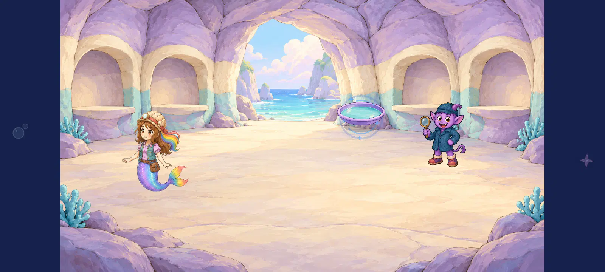
object finish 4.6/5; object semantics 4.6/5; object geometry 4.6/5; scene style 4.4/5; layout 4.4/5; invitation support 4.0/5
The painted pan preserves its2.06 oval ratio and honestly invites panning; warm plum matte rim and water remain clear at native invitation size4.6. The attempted support is completely hidden by its lower draw layer, so it receives no visible-object score; the invitation still hovers4.0. This is a disposable fixture defect, not a new production finding. Room finish is coherent4.4 but its source remains under native resolution.
Unmodified individual native Godot4.7.2 Mobile desktop view, directly inspected. Phase-selected fixture followed by actual viewport approach and three inherited reversals. Not a completed job, ordinary training/story route, device, child or owner approval.geologist_1600_pan_opened_task_original

object finish 3.5/5; object semantics 4.5/5; scene style 2.8/5; layout 3.0/5; grain finish 3.8/5; actor work contact 2.7/5
Procedural work staging remains flat and separate from Roshan. The literal pan source is stretched to the inherited520x320 rectangle4.4; grains still sit against the front rim4.1. Whole scene remains2.8 and actor hands do not contact the pan2.7.
Unmodified individual native Godot4.7.2 Mobile desktop view, directly inspected. Phase-selected fixture followed by actual viewport approach and three inherited reversals. Not a completed job, ordinary training/story route, device, child or owner approval.geologist_1600_pan_opened_task_literal_raster
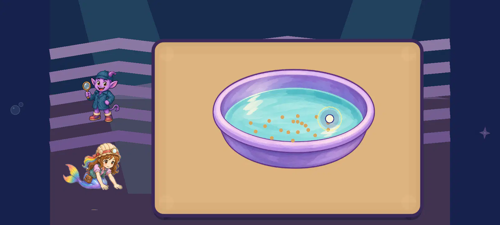
object finish 4.6/5; object semantics 4.5/5; object geometry 4.4/5; scene style 2.8/5; layout 3.0/5; grain finish 3.8/5; grain containment 4.1/5; actor work contact 2.7/5
Procedural work staging remains flat and separate from Roshan. The literal pan source is stretched to the inherited520x320 rectangle4.4; grains still sit against the front rim4.1. Whole scene remains2.8 and actor hands do not contact the pan2.7.
Unmodified individual native Godot4.7.2 Mobile desktop view, directly inspected. Phase-selected fixture followed by actual viewport approach and three inherited reversals. Not a completed job, ordinary training/story route, device, child or owner approval.geologist_1600_pan_opened_task_painted_staging
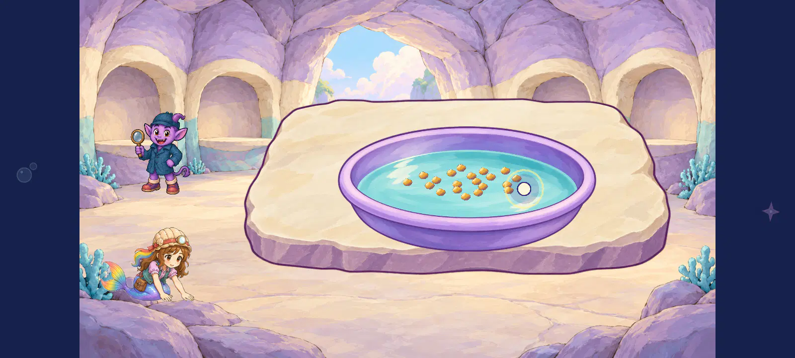
object finish 4.6/5; object semantics 4.6/5; object geometry 4.6/5; scene style 4.4/5; layout 4.4/5; slab geometry 4.6/5; grain finish 4.6/5; grain containment 4.6/5; actor work contact 2.7/5
The pan and slab retain their authored ratios4.6 and form a much calmer horizontal work plane. The reduced interior scatter keeps every visible grain inside the water4.6, and the freshly painted honey-ochre grains resolve flat dot finish at native size4.6. Roshan remains remote from the work2.7, so these isolated object improvements do not pass the whole action.
Unmodified individual native Godot4.7.2 Mobile desktop view, directly inspected. Phase-selected fixture followed by actual viewport approach and three inherited reversals. Not a completed job, ordinary training/story route, device, child or owner approval.geologist_1600_pan_partial_panning_reversals_original

object finish 3.5/5; object semantics 4.5/5; scene style 2.8/5; layout 3.0/5; grain finish 3.8/5; mineral finish 3.8/5; actor work contact 2.7/5
Procedural work staging remains flat and separate from Roshan. The literal pan source is stretched to the inherited520x320 rectangle4.4; grains still sit against the front rim4.1. Whole scene remains2.8 and actor hands do not contact the pan2.7.
Unmodified individual native Godot4.7.2 Mobile desktop view, directly inspected. Phase-selected fixture followed by actual viewport approach and three inherited reversals. Not a completed job, ordinary training/story route, device, child or owner approval.geologist_1600_pan_partial_panning_reversals_literal_raster
object finish 4.6/5; object semantics 4.5/5; object geometry 4.4/5; scene style 2.8/5; layout 3.0/5; grain finish 3.8/5; grain containment 4.1/5; mineral finish 3.8/5; mineral containment 3.4/5; actor work contact 2.7/5
Procedural work staging remains flat and separate from Roshan. The literal pan source is stretched to the inherited520x320 rectangle4.4; grains still sit against the front rim4.1. Whole scene remains2.8 and actor hands do not contact the pan2.7.
Unmodified individual native Godot4.7.2 Mobile desktop view, directly inspected. Phase-selected fixture followed by actual viewport approach and three inherited reversals. Not a completed job, ordinary training/story route, device, child or owner approval.geologist_1600_pan_partial_panning_reversals_painted_staging
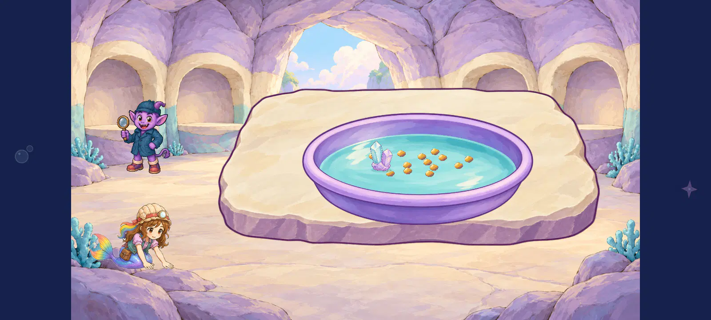
object finish 4.6/5; object semantics 4.6/5; object geometry 4.6/5; scene style 4.4/5; layout 4.4/5; slab geometry 4.6/5; grain finish 4.6/5; grain containment 4.6/5; mineral finish 4.6/5; mineral containment 4.6/5; mineral water contact 4.3/5; actor work contact 2.7/5
The pan and slab retain their authored ratios4.6 and form a much calmer horizontal work plane. The reduced interior scatter keeps every visible grain inside the water4.6, and the freshly painted honey-ochre grains resolve flat dot finish at native size4.6. Reused painted cluster finish4.6 replaces the flat pentagon; its complete base is inside the basin4.6 but the very faint water-contact ellipse still does not convincingly seat it4.3. This still requires correction. Roshan remains remote from the work2.7, so these isolated object improvements do not pass the whole action.
Unmodified individual native Godot4.7.2 Mobile desktop view, directly inspected. Phase-selected fixture followed by actual viewport approach and three inherited reversals. Not a completed job, ordinary training/story route, device, child or owner approval.